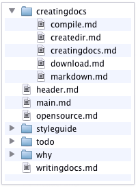

Today’s documents are still written as if for paper
If a document can just as easily be read in PDF format, then it was written as if for paper.
I believe this describes the vast majority of documents in the world today.
Sure hyperlinks allow you to easily reference other documents — but that doesn’t greatly improve the readability of individual documents.
sidenote.sh
A script created by mknote.sh, which compiles a specific Sidenote document.
Usage:
./sidenote.sh
Executes your local copy of sidenote.py to compile the Sidenote document.
Download Sidenote
On the command line:
git clone https://github.com/mikegagnon/sidenote.git
You can browse the source on Github.
Tilde-anchor syntax
You can define several independent columns in the same Markdown file using tilde-anchor syntax.
Example main.md that uses tilde anchors:
# Main header
blah blah...
[link to column #2](##column2)
[link to column #3](##col3)
~column2
# Column2 header
blah blah...
~col3
# Column3 header
blah blah...
In this example, main.md defines three independent columns:
Todo list
- Use jQuery.twFile to
wikify Sidenote
- Automatically recompile document when any .md file is saved
- Tree navigation on left side
- Detect more errors when compiling documents (e.g. deadlinks)
- Save error messages in html
- Remember the scroll state for each column that is out of view
- In the hashlink, record the number of visible columns
- Transitions should use CSS3
- Link every word to a dictionary / wikipedia / DuckDuckGo lookup
- Automatically scroll to top when opening new column (any tips?)
- Test in common browsers
- Perhaps use namespaces for columnIds?
- When you clink on a link, highlight it with a glowing color, so you can easily remember where you came from in the previous column (like a bookmark).
- Add bootstrap.css
- Click an image for a popover view that fits the screen.
Ideas
- Chrome extensions
- Turn the entire Web into a Sidenote document. Opening a new tab opens
a new Sidenote tab, instead of a new browser tab
- Automatically turn every Wikipedia page into a new Sidenote document.
- Auto-link
- You can give a tag a “name”
- Whenever the name appears in text, it is autolinked to that tab
- Links are only underlined when you hover you mouse over them
- Except for the first auto-link in the left-most column (which is
permanently underlined)
How does Sidenote accomplish it’s goal?
- The left column presents highly summarized information.
- The right column contains detailed information.
- Sidenote avoids context switches in the reader’s brain since both columns are always visible.
- A large font-size combined with a relatively slim column forces brevity upon the writer.
- Sidenote documents follow the Visual Information Seeking Mantra
Other .md files
Create as many other Markdown files as you like.
The directory structure doesn’t matter to the compiler, so organize your files as you see fit.
Github
https://github.com/mikegagnon/sidenote
Sidenote is implemented as:
Sidenote uses:
All feedback welcome!
Unlicensed
This is free and unencumbered software released into the public domain.
Anyone is free to copy, modify, publish, use, compile, sell, or
distribute this software, either in source code form or as a compiled
binary, for any purpose, commercial or non-commercial, and by any
means.
For more information, please refer to http://unlicense.org/
mknote.sh
Creates a new, minimal Sidenote document.
Usage:
./mknote.sh new_directory_name
Where new_directory_name is the name of a new directory that mknote.sh will create.
mknote.sh does the following:
- Creates new_directory_name to hold your document’s .md files.
- Creates a sidenote.sh script, which you can use to compile this specific document.
- Creates a minimal header.md file.
- Creates a minimal main.md file.
- Copies necessary javascript files into new_directory_name.
Test in other browsers
So far I’ve only tested in Chrome on my laptop
The left column should be optimized for skimming, because that is how most documents are read in today’s information overloaded Web.
Sidenote-link syntax
Example:
[Link text](##link_destination)
Sidenote adds one single addition to Markdown syntax: Sidenote links.
A Sidenote link is a link from one column to another column.
In Markdown, a Sidenote link looks almost like a regular Markdown link. The only difference is that you use two # symbols instead of one.
The link_destination specifies the name of .md Markdown file you want to link to (leave off the .md extension).
Transitions should use CSS3
From rixth:
If CSS3 transitions are used for animateSlide they’ll benefit from hardware acceleration, and the page weight will be considerably less as d3 will no longer be needed.
See Issue 1.
Writing Sidenote documents is easy
Every column goes in its own .md Markdown file (see daringfireball.net/…).
-
Create a new directory, say doc.
Here is the contents of the doc directory used to build this document:
header.md
main.md
license.md
opensource.md
todo.md
why.md
writingdocs.md
-
There must be a file named header.md and a file named main.md
- These files contain the header content and the left-column content, respectively.
- The other .md files contain right-column content.
- To link to a column, say opensource.md, do:
[Open source](##opensource)
- Then compile using sidenote.py
Style Guide for Sidenote documents
100% tentative. Feedback welcome!
- Help the reader skim your document.
- Be terse.
- Follow the Visual Information Seeking Mantra.
- Link text should typically summarize the column it links to, in one complete sentence.
- Paragraphs should only appear in the right-most columns.
- Paragraphs should typically include one or two bold or italicized words, that help the reader skim.
Context switches
Using typical web pages, the reader experiences a context switch whenver she clicks a link.
She must switch from the context of the previous page, to the context of the new page.
Such switches are taxing on the brain.
In a well-written Sidenote document, however, links don’t cause context switches.
The previous column is always visible on the left, and the new column appears along side of it.
Both columns have equal focus.
This is a crucial feature because the reader can confidentially explore columns, without worrying if the new column will be worth the click.
Visual Information Seeking Mantra
Sidenote documents should:
- Give a complete overview first.
- Give increasingly specific overviews, as the reader requests them.
- Only give details when the reader requests them.
This philosophy comes directly from Ben Shneiderman’s
Visual Information Seeking Mantra:
“Overview first, zoom and filter, then details-on-demand.”
Why use Sidenote?
The problem
Despite Web technology, most big documents are still written as if for paper.
Goal
Make encyclopedic documents easily digestible.
Sidenote’s feature set supports its goal.
Create a directory to hold your Markdown files

The sidenote.py compiler works by searching a directory (and its subdirectories) for .md Markdown files.
The compiler combines all these files into a single html file.
The figure on the right shows the directory that holds the Markdown files used to create this Sidenote document:
Sidenote presents a new way of reading and writing documents.
Why use Sidenote? Sidenote makes it easy to skim encyclopedic documents.
Creating documents with Sidenote is simple, if you are familiar with Markdown and using command-line tools.
Sidenote is unlicensed under the public domain.
main.md
Every Sidenote-document directory must contain a main.md file. This file contains the “Top” column. This column is the first column and represents the root of the document.
For example, this is the main.md file for this document:
*Sidenote* presents a new way of reading
and writing documents.
[Why use Sidenote?](##why) Sidenote makes
skimming documents a breeze.
[Creating documents with Sidenote](##creatingdocs)
is simple, if you are familiar with Markdown
and using command-line tools.
I have a small [todo list](##todo).
Sidenote is [open source](##opensource).
sidenote.py
Joins a group of Markdown files into a single html file.
Usage:
./sidenote.py doc/ > doc.html
Where doc is the directory (created by mknote.sh) that contains all the .md files you want to compile together.